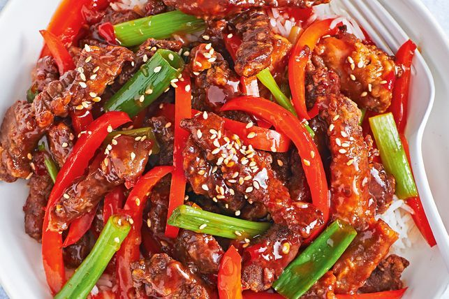

Crispy Sweet Chilli Beef

Mouth Watering Sweet Chilli Beef
Savor the irresistible allure of tender beef, expertly fried to a golden crispness,
then bathed in a luscious sweet chilli glaze that sets taste buds alight. Each bite
delivers a symphony of sensations: the satisfying crunch giving way to the succulent,
melt-in-your-mouth beef, all enveloped in a harmonious balance of sweet and spicy flavors.
As you lift a forkful to your lips, anticipation builds for the explosion of taste that awaits.
This crispy sweet chilli beef recipe is a culinary masterpiece, marrying the richness of
perfectly cooked beef with the zesty punch of chilli-infused sweetness. Whether served as
an appetizer to tantalize the senses or as a main course centerpiece, it promises to be a feast
for both the eyes and the palate, leaving you craving more with every delectable bite.
Ingredients
- 500g beef scotch fillet steak, thinly sliced across the grain
- 1 garlic clove, crushed
- 80ml light soy sauce
- 60ml sweet chilli sauce
- 1 tbsp rice wine vinegar
- 75g plain flour
- Vegetable oil, to shallow fry, plus 1 tbsp, extra
- 1 red capsicum, deseeded, thinly sliced
- 4 green shallots, cut into 5cm lengths
- Sesame seeds, toasted, to serve
- Steamed rice, to serve
Cooking Instructions
- Combine the beef, garlic and 1 tbsp soy sauce in a bowl. Set aside for 10 minutes to marinate. Meanwhile, whisk together the sweet chilli sauce, tomato sauce,
vinegar and remaining soy sauce in a jug.
- Place the flour in a bowl. Add oil to a frying pan to come 5mm up the side
of the pan. Place over medium-high heat. Place half the beef in the bowl
and toss to coat. Shake off excess flour then add beef to pan. Cook, stirring
occasionally, for 4-5 minutes or until crisp and golden. Transfer to a plate
lined with paper towel to drain. Repeat with remaining beef.
- Heat the extra oil in a wok or frying pan over high heat. Add the
capsicum and pale sections of shallot. Stir-fry for 2-3 minutes or
until softened slightly. Add the sweet chilli sauce mixture, beef and dark
sections of shallot. Toss until combined and heated through. Divide among serving bowls.
Sprinkle with sesame seeds and serve with rice.